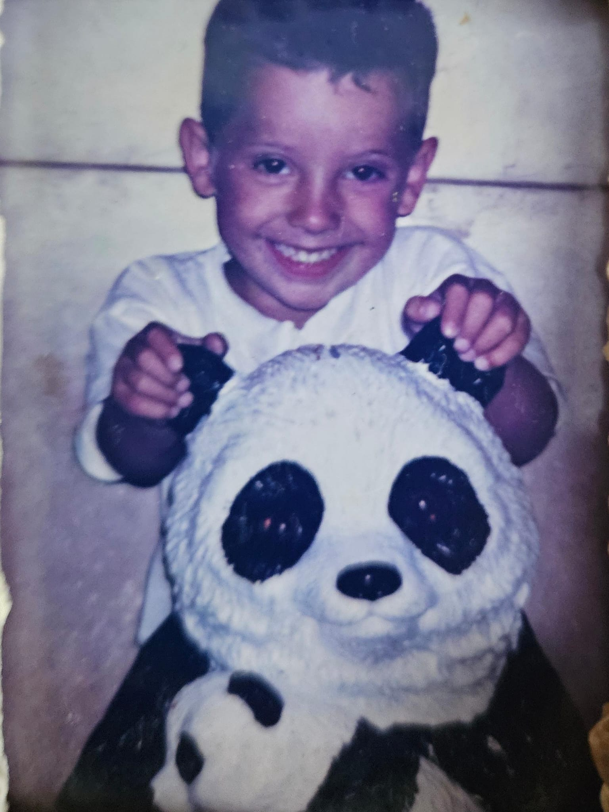
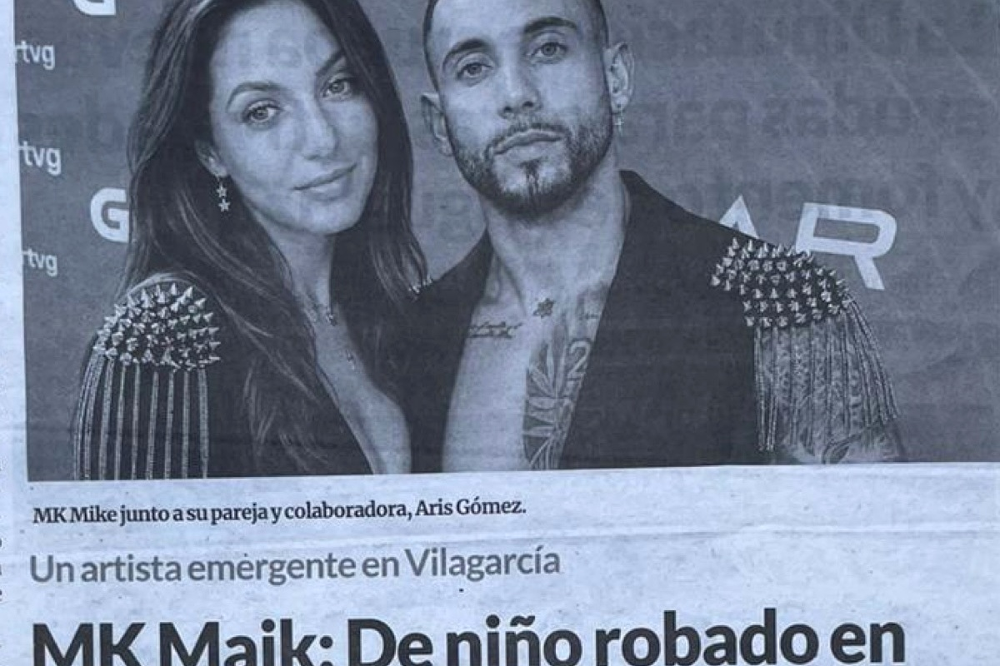
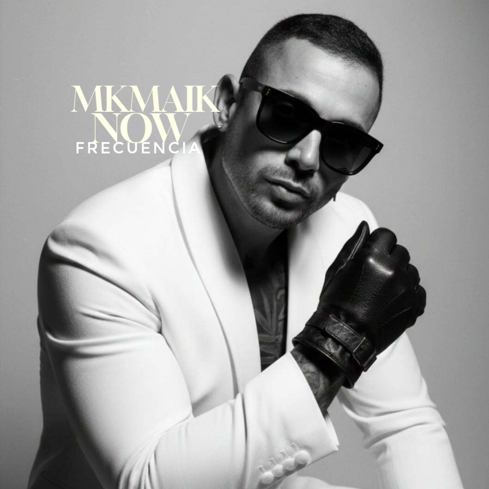

ROSE
El inicio de una etapa artística marcada por la identidad y la superación.
Escuchar en SpotifyGalicia · Argentina · Los Ángeles
La historia de un superviviente que convirtió cada caída en música, identidad y buena vibra.
Discografía
Canciones que cuentan una vida. Escucha cada frecuencia en sus plataformas oficiales.
El inicio de una etapa artística marcada por la identidad y la superación.
Escuchar en SpotifyLetra: Aris Gómez Olalla · Una historia real convertida en música.
Escuchar en Spotify
Capítulo 0
Jesús Güimil Beiras, MK MAIK, nace en Vigo con raíces argentinas. Una vida marcada por la búsqueda de identidad, el bullying, la superación y una fuerza interior que terminó transformándose en música.
Su mensaje no nace de una pose: nace de una historia real. Del silencio nació su voz. De su voz, su legado.
Leer la historia completa


Calendario de eventos, conciertos y apariciones especiales.
Prensa · Radio · Televisión
La trayectoria de MK MAIK ha despertado el interés de medios de comunicación, emisoras de radio, plataformas audiovisuales y prensa escrita.


Fans · Comunidad · Propósito
Cada mensaje, cada abrazo y cada persona que se acerca después de una actuación me recuerda por qué sigo caminando.
“Si mi historia ayuda a una sola persona a levantarse, entonces todo el dolor tuvo un propósito.”
Marcas
Mi contenido formó parte de conversaciones y publicaciones dentro del ecosistema digital de Coca-Cola.
Ver publicaciónReconocimiento e interacción por parte de una marca internacional vinculada a creatividad e innovación.
Ver ChameloCapítulo final · y comienzo
Un viaje real a través del silencio, el bullying, la búsqueda de identidad, la familia, la música y la transformación.

Libro
No es solo un libro. Es el relato real de un niño que aprendió a sobrevivir al silencio, al rechazo y a las dudas para encontrar su propia voz.

Contacto
Contrataciones, prensa, colaboraciones y proyectos con propósito.
info.artista@mkmaik.com